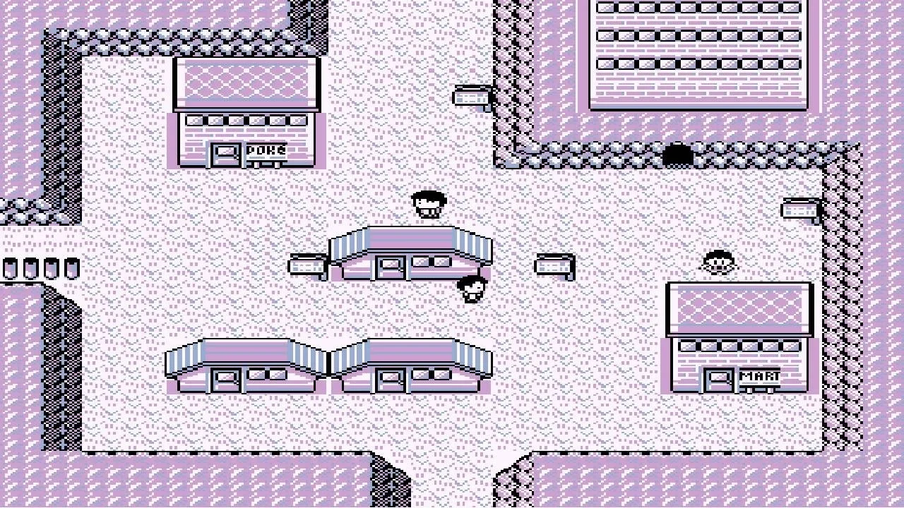

Este 2023 se cumplen 29 años del que quizá sea el momento más recordado en toda la historia de las competiciones de videojuego, el combate de Street Fighter III: 3rd Strike que en 2004 enfrentó a los jugadores profesionales Daigo Umehara y Justin Wong . Coincidiendo con esta efeméride, ha aparecido una nueva grabación, inédita hasta la fecha, que captó la emoción del público frente a la inesperada remontada de Umehara durante una de las semifinales del torneo EVO.
El combate, conocido también con el sobrenombre de “Moment #37”, es famoso no tan solo por la reacción eufórica del público, sino sobre todo por la extraordinaria técnica del jugador japonés a la hora de contrarrestar el ataque especial de su rival . La destreza de Umehara a la hora de bloquear los quince ataques consecutivos de Wong y el posterior contraataque es lo que hizo que los asistentes enloquecieran.
A pesar del auge en los últimos años de los eSports, este combate sigue siendo un momento absolutamente icónico cuando se habla de competiciones de videojuego.
Pueblo Lavanda es un pueblo ficticio de los videojuegos Pokémon Rojo y Azul. Representado como una localización encantada, el Pueblo Lavanda es hogar de un cementerio de estilo japonés. La música de fondo del Pueblo Lavanda es reconocida por el ambiente misterioso que añade al pueblo, y produjo el creepypasta del Síndrome del Pueblo Lavanda, el cual sugiere que más de cien niños japoneses cometieron suicidio después de escuchar a la pista de audio.
La música de fondo del Pueblo Lavanda ha obtenido mucho interés debido a su sonido horripilante. Listándola como la segunda pista de videojuegos más tenebrosa en 2012, Brittany Vincent de Bloody Disgusting declaró que la melodía "engañosamente calmada... tiene un puesto alto en las memorias terroríficas de la mayoría de gamers." La música del Pueblo Lavanda, compuesta por Junichi Masuda, combina sonidos chiptune agudos con "un desfile de acordes desafinados" para crear una atmósfera misteriosa. Jay Hathaway de Gawker declaró que poniendo la música en bucle puede causar un "sentido impreciso de pavor".
Según una historia creepypasta que fue anónimamente subida a Pastebin en 2010, la música del Pueblo Lavanda ocasionó el suicidio de más de 100 niños japoneses en el verano de 1996. Otros presuntamente padecían sangrado de nariz, dolores de cabeza, o se volvían irritables. Según esta leyenda urbana, ritmos binaurales de tono alto se metan con los cerebros de los niños en una manera de la que los adultos eran inmunes.

El jugador profesional de League of Legends Andréas "Sardoche" Honnet, lanzó un desafío en colaboración con Xiaomi Francia con unas reglas muy claras: acabar el juego matando a los 15 jefes principales, en el menor tiempo posible, con un personaje en nivel 1 y sin glitches. Si atendemos a la duración de Elden Ring en How Long to Beat, veremos que completar el juego base supone 51 horas; esto sumado a la imposibilidad de hacer uso de pequeñas trampas, hacen que hablemos de una de las cruzadas más difíciles y grandes del juego.
Un desafío que pasó por alto para muchos, pero que se alzó el pasado mayo con un ganador: Distorsion2. Sí, aquel jugador que consiguió acabar el juego en menos de 10 minutos —concretamente 8 minutos y 56 segundos— ese mismo mes de mayo, consiguió el récord con un tiempo de 2 horas, 4 minutos y 1 segundo.
El anterior récord lo marcó GinoMachino con solo 15 segundos más —2 horas, 4 minutos y 16 segundo de duración— apenas 1 hora antes de dar por finalizado el torneo. En ese tiempo, Distortion2 se colocó la armadura y salto al campo de batalla para hacer frente a la Bestia del Círculo una última vez, victoria que consiguió enviar a Xiaomi solo 15 minutos antes del final del torneo.
Un evento muy difícil, donde los jugadores tuvieron apenas 1 mes para practicar y contabilizar la duración en las diferentes rutas del juego y ponerlas en práctica. Aun así, este jugador no ha llenado el cupo de desafíos de Elden Ring que completar. El speedrun en el que se embarcó consistió en acabar Elden Ring sin poder avanzar hasta completar el jefe de cada zona. Un desafío que puede parecer algo nimio, pero que lleva a calcular nuevas rutas, no perder tiempo en farmeos, y sin tener posibilidad de enfocar el RPG acabando con los jefes más fáciles primero.